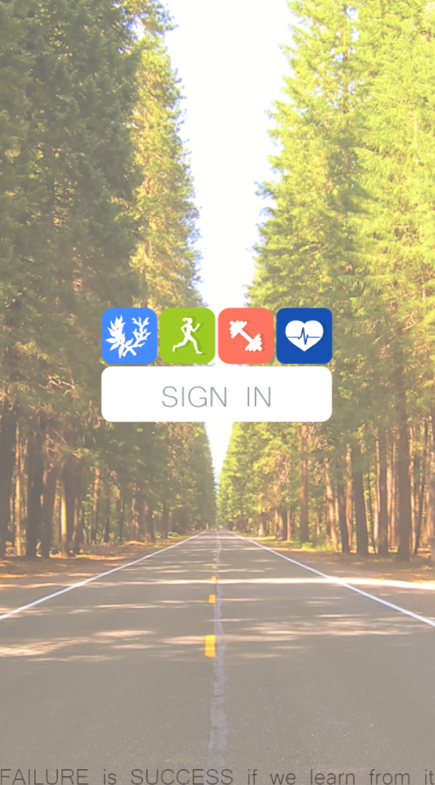

3. Flow - Byg en app

Formålet med den første projekt jeg lavede var at designe min første udkast af min personlige hjemmeside. I den anledning har jeg arbejdet med Adobe Experience design.
Selve hHjemmesiden har jeg holdt simpel og brugervenlig.
Som baggrund har jeg valgt et bjerg. Jeg fandt billedet, som min søster har taget. Det er et billede af et bjerg, som jeg voksede om med at kigge på. Så jeg syntes at det var passende, hvis den på den ene eller anden måde repræsenterede mig. Det samme billede har jeg genbrugt i 2.- og 5. flow.
Jeg har valgt at bruge de blålige nuancer som farver på hjemmesiden, de samme nuancer som baggrunden. Og som kontrast har jeg valgt en gul farve, som komplimenterer farven blå. Det er de samme farver jeg har brugt i de næste udkast af hjemmesiden.
Nedenunder er der links, som viser resten af designet.